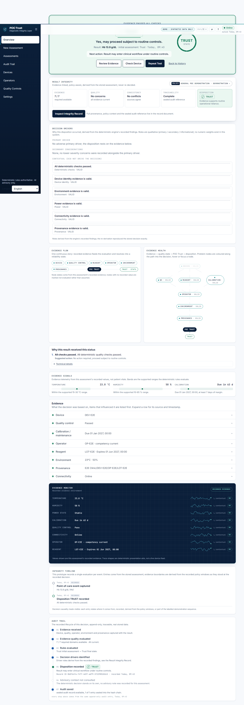
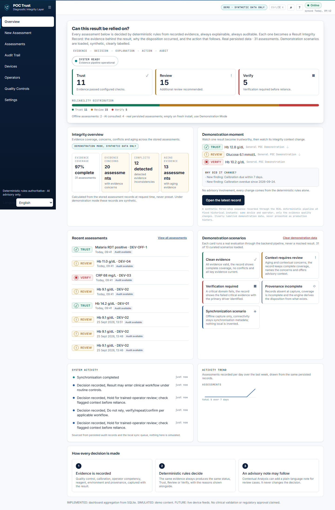

A deterministic integrity layer between a point-of-care diagnostic result and the clinical workflow. Every assessment ends in TRUST, REVIEW or VERIFY, with the rules that drove it, the action that follows, and a sealed audit entry.

QC, calibration, reagent expiry, environment, provenance and connectivity evaluated by explicit rules. No model decides.
VERIFY cannot be downgraded — not by AI, not by configuration. AI is advisory explanation only.
Every decision stores reasons, rule IDs, operational action and an append-only, hash-chained audit record.
TRUST → REVIEW → VERIFY recorded through the real pipeline at historical instants as calibration ages.
dotnet build — clean; dotnet test — 131 passed, 0 failed.
dotnet run --project src/POCTrust.Api --urls http://127.0.0.1:5222 and npm run dev in frontend/poc-trust-ui. Prototype with synthetic data; not a clinical device.